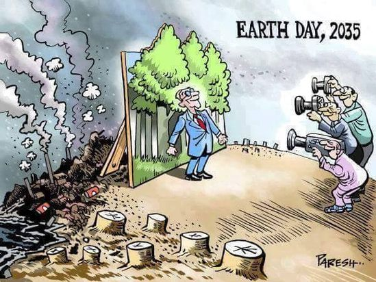

welcome to html


The character in the blue suit is a politician. The other 3 characters with cameras are representatives of the media. One of the important symbols in this political cartoon is the date that states “Earth day, 2035” because it shows the amount of pollution our country will have in the future. The other important symbol would be the big bulletin board that shows a picture of a clean environment with full grown, healthy-looking trees. This symbol is important because the politician in the picture is deceiving society by displaying a fake representation of our world to the media which tricks people into thinking our environment is clean and unpolluted. The reality of the situation is what is hidden behind the picture.